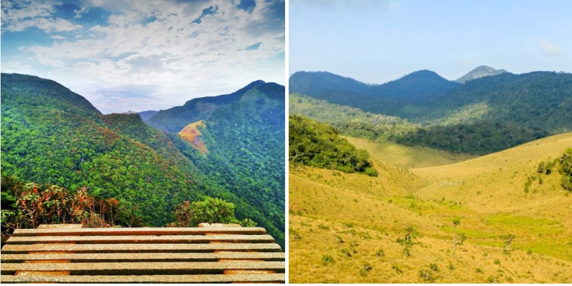

Contact Us


The Lion Rock of Sigiriya is one of the most famous highlights in Sri Lanka. The photogenic rock is over 200 meters high and is on the UNESCO World Heritage List. On top of this rock stood the palace of King Kasyapa in the 5th century. You can still see the ruins of the palace at the top, from where you have an amazing view over the vast green jungle. The rock owes its name to the lion, carved in stone, which guards the stairs. Now only the legs are left. At the foot of the rock you will find beautifully landscaped gardens, canals, a small museum and countless monkeys roaming around. The climb up, via almost 1900 steps, is tough but well worth it. Halfway up you can make a stop at the well-preserved murals of undressed women and at a smoothly polished mirror wall in which the king could admire himself.
Visit Sigiriya early in the morning when it is still cool. The climb is even harder in the afternoon heat. Although the late afternoon is a bit quieter in terms of visitors. From Colombo and Kandy you can also book a full day tour to Sigiriya, often including a visit to the Dambulla Cave Temples.
Take into account crowds and a fairly hefty entrance fee of approximately $ 30.

Discover the relaxation paradise of Sri Lanka; Ella. A village with a wonderful vibe in a beautiful green, hilly environment. Ella is known as a backpacker’s paradise, but is also a great destination for luxury travelers during their Sri Lanka tour. In the vicinity you will find tea plantations, waterfalls, viewpoints and the most beautiful hiking trails. Climb Ella Rock (about 2.5 hours of hiking) for a great view and also hike up on Little Adam’s Peak (about 1.5 hours) for even more panoramas. Furthermore, the Rawana Falls, the Nine Arch Bridge and some temples and tea factories are worth a visit. Moreover, Ella is known for a famous train ride! The train journey from Ella to Kandy (around 7 hours) goes straight through the tea plantations and is one of the most beautiful train journeys in the world.
Take beautiful walks in the surroundings of Ella, including Little Adam’s Peak and Ella Rock.
Take the train journey from Ella to Kandy (or vice versa) and enjoy the lush tea plantations where you can see the tea pickers at work. Tip: Make a stop along the way in Nuwara Eliya (see number 6) for a few nights to interrupt the train journey.
Do you want to spot elephants in the wild? Then Udawalawe National Park is the best place! The hundreds of elephants in the park ensure that there is a good chance of spotting a herd during a safari. But also crocodiles, monkeys, leopards, deer, swine and all kinds of reptiles and birds inhabit the Udawalawe savannas. Also visit the Elephant Transit Home, a shelter for injured and orphaned elephants. The home is supported by the British Born Free Foundation that fights animal suffering and by the Dutch non-profit organization World of Wildlife. The best time to visit is during feeding time.
Go on safari in Udawalawe. Jeep safaris can easily be booked online in advance, but you can also visit most hotels in this area or at the entrance to the park. Costs are around € 30 for a 6-person jeep regardless of the number of passengers. An extra tip is common. An organized safari tour to the Udawalawe National Park from Colombo or Galle is also easy to book online.
Entrance fees for the Udawalawe National Park are approximately € 15 per adult per day. Children 6-12 receive a 50% discount.

Kandy is the cultural center of Sri Lanka. The city is an important place of pilgrimage for Buddhists because of the famous Temple of the Tooth (Dalada Maligawa Temple). Here the sacred tooth of Buddha is kept in a golden stupa. During prayer you can take a look at the room where the tooth is kept and you can sometimes see hundreds of Buddhists making sacrifices, including many monks. In the temple complex you will also find several museums and important Buddhist relics. But Kandy has even more to offer. Visit the botanical gardens, the picturesque lake in the heart of the city, the atmospheric “old quarter” and the wood and precious stone workshops where you can buy handmade souvenirs. In the evening you can attend a traditional dance show.
Plan your visit to Kandy during the Perahera festival which is held every year in July or August. The 10-day festival revolves around the tooth of Buddha and is the most important festival in Sri Lanka. Processions take place every evening. These consist of beautifully dressed Kandy dancers, acrobats, fire dancers, musicians and decorated elephants. On one of the elephants, decorated with lights and colorful fabrics, a replica of the holy tooth is carried around the city. Special to experience during your holiday in Sri Lanka.
Book a day tour where you will see all the highlights of Kandy and the surrounding area. Check out an 8-hour tour here or this 12-hour tour.
Explore the highlands of Kandy, visit a tea plantation, admire the Ramboda Falls waterfalls, explore the Hakgala Botanical Gardens and take a walk or laze on Nuwara Eliya’s Lake Gregory with this 12-hour tour

Are you looking for Sri Lanka “off the beaten track”? Then visit Jaffna, all the way to the north of Sri Lanka. Here you will find the culture of the Tamils, with their own language and very authentic cuisine. Jaffna still shows many traces of the civil war that raged in Sri Lanka for years. The bomb impacts and bullet holes can still be seen in many buildings. But the Tamils have also rebuilt large parts of their city. Colorful Hindu temples, beautiful churches and lots of greenery determine the cityscape. Moreover, there is a very relaxed vibe and Jaffna is a nice base if you want to explore the lagoons, coastline and islands in the area.
Visit the Dutch fort in Jaffna that dates from 1680 and offers a beautiful view over the lagoon.
Take a look at Point Pedro with its idyllic fishing boats and beautiful coastline. This area was considerably destroyed in the 2004 tsunami, but has since recovered much of its charm.
Tea plantations can be found throughout “the hill country” of Sri Lanka. One of the best places to immerse yourself in tea plantations and tea factories is Nuwara Eliya. The cool climate ensured that the British settlers settled there at the beginning of the 19th century. You will still find many well-preserved British houses there. But of course you come here for tea! Be guided by Pedro Tea Estate or one of the other tea factories in the area and pick your own tea leaves on the plantation. To make the experience complete, you can spend the night in a former tea factory, where many original factory attributes have been preserved. Non-guests can also go here for a tea tasting and a high tea. What more do you want as a tea lover!
Nuwara Eliya is a nice stopover on the famous beautiful train ride from Ella to Kandy. Stay here for 1 or 2 nights.
Also visit the beautiful Lovers Leap waterfall and Gregory Lake.
Nuwara Eliya is the best base to visit Horton Plains National Park and World’s End
Dambulla is a “must” during your trip through Sri Lanka, but only because of the famous Dambulla Cave Temples! The caves are on top of a 160 meter high rock, from where a giant golden Buddha is luring you inside. There are 5 different caves that you can visit with around 150 different Buddha statues and murals. The beautiful images vary in size. Many have been here for 2000 years, when King Valagamba sought refuge in the caves and had the temples carved out of it. Dambulla is a popular place of pilgrimage among Sri Lankan Buddhists. The view over the area is also beautiful here.
Entrance fees for the Dambulla Cave Temples are approximately € 10 per adult, children are free.
Apart from the cave temples, Dambulla does not have much to offer visitors anymore. We therefore advise you not to stay in this busy city longer than necessary during your holiday in Sri Lanka. Plan your visit to the Dambulla Cave Temples on the outward or return journey to Sigiriya. If you decide to stay in Dambulla, 1 night is enough.
Sri Lanka has many beautiful beaches. Hikkaduwa is one of the popular beach destinations on the south coast of the country. Ever since the 1970s, tourists have been coming here to enjoy waving palm trees and the relaxed “hippie & surfers vibe”. The growing number of hotels and restaurants has unfortunately led to quite a bit of erosion, but the sand seems to be slowly returning to Hikkaduwa beach. You will also find nice cafes and restaurants on the beach and you can go diving and snorkeling. In terms of hotels there is something for everyone; from simple to luxury.
Are you coming to Hikkaduwa to surf? Then the months November to April are the best period for your visit.
Arugam Bay is Sri Lanka’s surfers hotspot! In this small town on the east coast you will find perfect waves from April to September, some years even to November. There is a real “surfers vibe” with various surf schools, board shops and relaxed bars where you can linger all day. Arugam Bay is very quiet outside the high season, many local tents are closing their doors this month. The sea is quite rough in this tropical bay. You can swim, but keep the current in mind. Also make sure that the tours to the mangroves do not miss.
If you travel to Arugam Bay by public transport, take the bus to Pottuvil (4 km away). You usually travel via Siyambulanduwa (37 km to the west) and you can take a bus there to Pottuvil. Buses don’t go very often, so plan your trip in advance.
Leopards, elephants, water buffalo, monkeys, jackals, crocodiles and hornbills; they all live in the very diverse nature reserve of Yala National Park. Yala, also called Ruhunu Park, is one of the best game parks in Sri Lanka to go on safari. Your chances of spotting elephants in the wild are quite high, with a population of a few hundred elephants. Due to the successful leopard project, you will also find a relatively large number of leopards in Yala. We spotted one on a broad branch in a tree, an amazing sight!
Go on a jeep safari in Yala and book a half or full day tour. Safaris can be arranged at most hotels and at the entrance of the park. The jeeps are often open on the side and have a roof for sun protection.
Entrance fees for the Yala National Park are approximately € 15 per adult per day. Children 6-12 receive a 50% discount.
Check the condition of the jeep with which you are going on a safari. The old jeeps are cheaper and less comfortable than the newer jeeps. The costs for a jeep safari in Yala are approximately € 25 to € 35 per jeep for half a day (regardless of the number of passengers). The driver is then immediately your guide. An additional guide can be hired for a surcharge. A tip for both the driver and any guide is common.
Galle is located on the south coast of Sri Lanka and is teeming with Dutch-colonial buildings. The city is best known for its 17th century Dutch Fort. The well-preserved Fort is on the UNESCO World Heritage List and was built to protect the Sri Lanka colony in the VOC era. Inside the walls you will find museums, churches, temples, mosques, shops and various colonial buildings. We recommend a visit to the Dutch Reformed Church, containing tombstones of Dutchmen dating back to the year 1662. Also look for the Dutch street signs that you can find in many places. Then take a walk on the walls along the sea and observe the young locals who have their favorite “hang out spot” here.
Galle is a great location to spend a night during your tour in Sri Lanka. But you can also choose to visit Galle as a trip. You will spend a few hours there and you can stay in one of the nearby coastal towns such as Hikkaduwa , Unawatuna or Mirissa.
Horton Plains National Park is a beautiful nature reserve with mysterious landscapes and mountains. The park is located on a 2000-meter high plateau and includes grasslands, thick forests, foggy lakes, waterfalls and huge rocks. It is an excellent place for birdwatchers, but there are more animals such as boar monkeys, deer and even some leopards. The most famous highlight in the park is World’s End. Here the plateau ends in a deep abyss of 870 meters. This provides an amazing view of the surrounding villages, tea plantations and the valley. You have the best view at sunrise in the dry season (October to March). After 9 o’clock in the morning it is often very foggy.
Horton Plains is approximately 1 hour’s drive from Nuwara Eliya. You can book a complete tour or just the transport. A return by minivan costs around € 25.
The walk from the entrance of Horton Plains to World’s End is 4 kilometers. Keep in mind that you will leave Nuwara Eliya very early if you want to see the sunrise.
The entire hiking route to World’s End is a 9.5-kilometer tour where you can also visit the Baker Falls waterfalls. It takes about 3 hours at a leisurely walking pace (excluding the stop at World’s End).
Entrance fees for Horton Plains are approximately € 15 per adult, 50% discount for kids 6-12 years.
The idyllic town of Mirissa is located in a semi-circular bay on the south coast and is an upcomming destination. Here you will find a real backpacker and surfer vibe and nice restaurants and hotels along the sandy beach. You can surf here from November to March, with great waves for both beginners and experienced surfers. But Mirissa is also known as a good location for whale watching, between November and April. The blue whale, the largest mammal on earth, regularly swims along the coast and dolphins are also often seen. Mirissa is therefore a real “must” if you visit Sri Lanka between November and April.
Are you specially coming to Mirissa to spot the blue whale? In the months of December and April you statistically have the greatest chance. Before booking your whale tour, inquire about the rules that the agency handles with regards to approaching the whales, such as keeping sufficient distance and not chasing the whales with two boats.